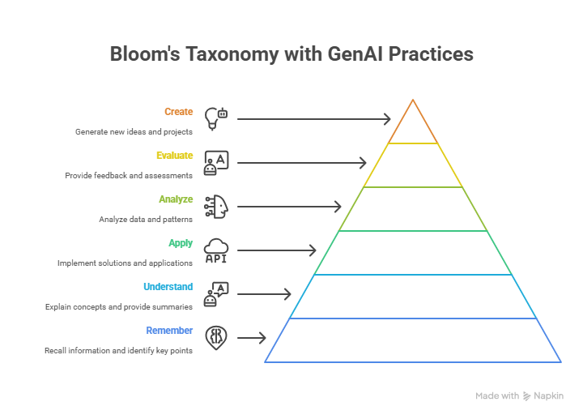

2. Pedagogical-Didactic Planning#
Strategic and intentional groundwork for teaching
This topic focuses on the strategic and intentional groundwork for teaching. It involves defining course goals and learning outcomes, identifying the audience and context, selecting appropriate pedagogical approaches, choosing educational technologies and AI-enhanced tools, aligning with institutional and ethical guidelines, and creating the course syllabus. You will explore how generative AI can assist with tasks like drafting learning outcomes using frameworks such as Bloom’s Taxonomy and generating draft policies. The following topics will be covered here:
Define course goals and learning outcomes
Identify audience and context
Select pedagogical approaches (e.g., active learning, inquiry-based, project-based)
Choose educational technologies and AI-enhanced tools
Align with institutional and ethical guidelines
Create the course Syllabus
2.1 Define Course Goals and Learning Outcomes#
Task: Clarify what learners should be able to know, do, or value by the end of the course.
Instructional + Role-Based Prompt
I am a higher-education teacher designing a course titled "Teaching and Learning with AI". The target audience is higher education faculty and students. Suggest 4–6 clear learning outcomes using Bloom’s taxonomy across different cognitive levels. Focus on skills related to using generative AI for teaching, learning, and assessment.
Click on the link below to see the Bloom’s Taxonomy & GenAI Teaching Practices artifact generated by Claude.ai.
https://claude.ai/public/artifacts/b64d5dd0-17b7-40b4-81c4-67041fbf8810
Instructional Prompt Used in Claude.ai to create the Interactive Artifact
Teaching and Learning with AI. Create a diagram of Bloom’s Taxonomy pyramid with example verbs for each level (Remember → Create), linking each level to potential GenAI teaching practices.

2.2 Identify Audience and Context#
Task: Profile the expected learners (background, skills, attitudes) and delivery context (online, in-person, hybrid).
Role-Based Prompt
You are an instructional designer creating faculty development programs. Describe the learner profile for a course on "Teaching and Learning with AI" aimed at university instructors from various disciplines. Include background knowledge, teaching experience, tech comfort, and possible challenges.
2.3 Select Pedagogical Approach(es)#
Task: Decide how learning will happen: lecture, problem-based learning, flipped classroom, co-creation, etc. Choose teaching methods aligned with learning goals and context.
Chain-of-Thought Prompt
Given that the course aims to teach faculty how to use generative AI in teaching and learning, what are three most suitable pedagogical models (e.g., flipped classroom, problem-based learning)? For each, explain how it supports the learning goals, and how AI could enhance the model.
2.4 Choose Tools and Technologies#
Task: Identify generative AI tools and explain their educational uses.
Zero-Shot Prompt
List 5 generative AI tools suitable for a course on teaching with AI. For each tool, describe its main use in teaching or learning, and mention one risk or limitation.
2.5 Align with Institutional and Ethical Guidelines#
Task: Draft ethical and policy-aligned foundations for AI use by the students. The general FGCU AI use policies are available at the link below: https://www.fgcu.edu/about/leadership/officeoftheprovost/generative-ai
The following files contain the general FGCU policies for GenAI use. Download them and use as the institutional policies for GenAI use.
Student_Code_of_Conduct
General_FGCU_GenAI_Policies
Core_Syllabus_Policies_Statements
Few-Shot Prompt
Below are examples of AI use policies for learning:
1. Submitting the work of another person or entity as your own is not permitted. “Entity” includes Generative AI tools such as ChatGPT.
2. Receiving assistance that has not been authorized by the course instructor is not permitted. This includes assistance from Generative AI tools.
3. Students should not use of sources that go beyond those authorized by the instructor. This includes using Generative AI tools as a source.
Based on these and the attached files with the university policies, generate a draft of an AI use policy for a course on [Course Name/Info] that incorporates transparency, accountability, and fairness.
The "AI Use Policies" must contain: an introductory paragraph that explain what is AI and contextualize it for the course; a description of what is acceptable and unacceptable in terms of AI use for the course; citation requirements and procedures; list of prompts used; a summary table of all uses of AI in the course.
2.6 Create the Course Syllabus#
Task: Based on a pre-specified syllabus format, let the AI model create a syllabus for our course.
Note that the prompt below may contain sections that were previously prompted, e.g. Learning Objectives, and AI Use Policies. You can also attach your previous syllabus or the structure of your desired syllabus and prompt the model to use it as template.
Instructional Prompt
# Syllabus Generator Prompt
Please provide the following details to generate a syllabus for your course.
Use the structure and style of the provided example syllabus, including sections for course information, professor information, course description, course program, bibliography, student learning outcomes, instructional method, evaluation and grade assignments, assignments, final exam, attendance policy, student contact information, notes, core syllabus policies, and a tentative weekly schedule.
Fill in the placeholders with the relevant information for your course.
## Course Information
- Course Number: [Enter course number]
- Course Title: [Enter course title]
- Semester/Year: [Enter semester and year, e.g., Spring/2025]
- Offering College/Department: [Enter college and department, e.g., U.A. Whitaker College of Engineering/Department of Computing and Software Engineering]
- Credit Hours: [Enter credit hours, e.g., 3]
- Meeting Times/Location: [Enter meeting times and location, e.g., M/W 13h30 - 14h45, Holmes Engineering 202]
- Method of Delivery: [Enter delivery method, e.g., Face-to-face class]
- Course URL: [Enter course URL, e.g., http://canvas.fgcu.edu]
- Prerequisites: [Enter prerequisites, e.g., Not applicable]
## Professor Information
- Instructor: [Enter instructor name and title, e.g., Leandro Nunes de Castro, Ph.D., Professor, Department of Computing and Software Engineering at WCOE]
- Office Address: [Enter office address, e.g., Holmes Hall 126D]
- Office Phone: [Enter office phone, e.g., 239-590-1362]
- E-mail Address: [Enter email address, e.g., ldecastrosilva@fgcu.edu]
- Office Hours: [Enter office hours, e.g., MO WE 15:00-17:00]
## Mandatory Confirmation of Attendance
[Describe the attendance confirmation policy, e.g., All faculty members are required to use Canvas to confirm a student's attendance for each course by the end of the first week of classes. Failure to do so will result in a delay in the disbursement of your financial aid. The confirmation of attendance is required for all students, not only those receiving financial aid. Every student must complete a mandatory activity in Canvas during the first week.]
## Course Description
[Provide a brief description of the course.]
## Course Program
[List the main topics or modules, e.g.,
1. Fundamentals of [Course Topic]
- [Subtopic 1]
- [Subtopic 2]
2. [Topic 2]
- [Subtopic 1]
- [Subtopic 2]
3. [Topic 3]
- [Subtopic 1]
- [Subtopic 2]
4. [Topic 4]
- [Subtopic 1]
- [Subtopic 2]
5. [Topic 5]
- [Subtopic 1]
- [Subtopic 2]]
## Bibliography
[List recommended or required texts, e.g.,
1. [Author], [Title], [Edition], [Publisher], [Year].
2. [Author], [Title], [Edition], [Publisher], [Year].
3. [Author], [Title], [Publisher], [Year].
4. [Author], [Title], [Publisher], [Year].
5. Texts provided by the teacher.]
## Student Learning Outcomes
[Specify outcomes, e.g., Upon successful completion of this course, the student will be able to:
1. [Outcome 1]
2. [Outcome 2]
3. [Outcome 3]
4. [Outcome 4]]
## Instructional Method
[Describe the teaching approach]
## Evaluation and Grade Assignments
[Describe assessment instruments and grading policy, e.g.,
The following instruments will be used:
- IA: An individual assessment of the weekly lessons, which may consist of a quiz, a summary, a pre-class assessment or a problem/project-based participation assessment.
- SE: Presentation of seminars (projects). The themes of the seminars will be defined based on the contents covered in the course.
- PR: Final project.
- EX: One or more individual exams.
The grade and concept of the course will be defined from the following scheme:
| Grading Policy | % |
|--------------------|-----|
| Individual Assessments | 20 |
| Seminars | 20 |
| Project | 40 |
| Exams | 20 |
| Total | 100 |
| If | Grade |
|--------|-------|
| 93 ≤ Total ≤ 100 | A |
| 90 ≤ Total < 93 | A- |
| 87 ≤ Total < 90 | B+ |
| 83 ≤ Total < 87 | B |
| 80 ≤ Total < 83 | B- |
| 77 ≤ Total < 80 | C+ |
| 73 ≤ Total < 77 | C |
| <73 | F |]
## Assignments
[Describe assignment policies]
## Final Exam
[Describe final exam policy]
## Attendance Policy
[Describe attendance policy]
## Student Contact Information
[Describe communication policy]
## Notes
[Include additional notes, e.g.,
1. [Note 1]
2. [Note 2]
3. [Note 3]
4. [Note 4]]
## GenAI Use Policies
[Include core policies]
## Tentative Weekly Schedule
[Provide a tentative schedule, e.g.,
| Week | Date | Topic | Chapter |
|------|------|-------|---------|
| 1 | [Date 1, Date 2] | [Topic 1] | [Chapter 1] |
| 2 | [Date 1, Date 2] | [Topic 2] | [Chapter 2] |
| 3 | [Date 1] | [Topic 3] | [Chapter 3] |
| ... | ... | ... | ... |
| 16 | [Date] | [Topic 16] | [Chapter 16] |
* Subject to change with notice.]